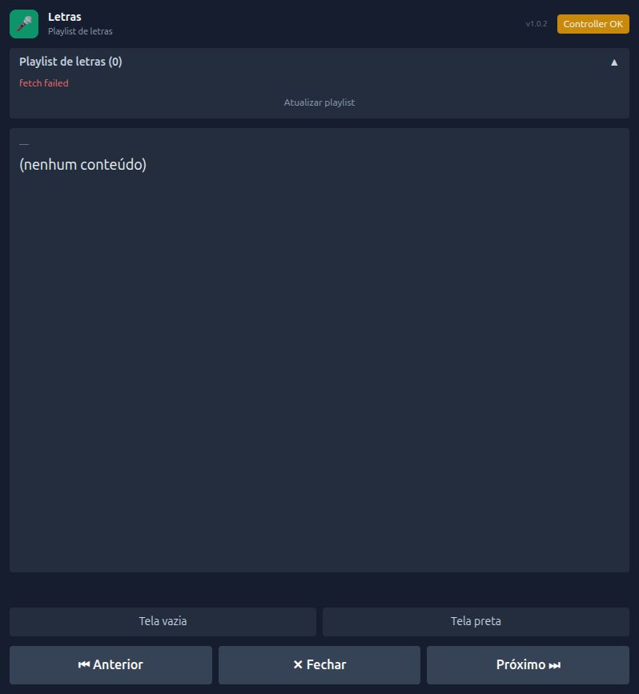
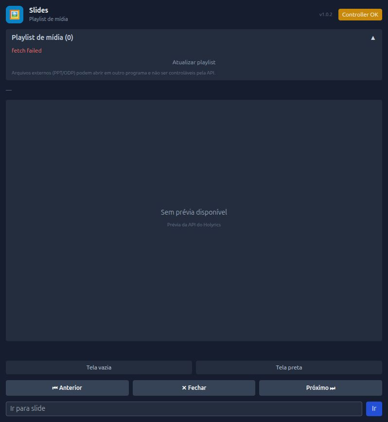
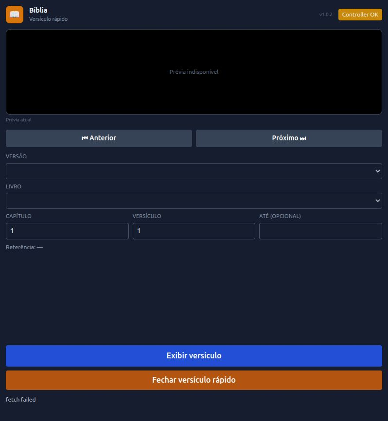

Um controlador local, gratuito e portátil. Painel administrativo, docks para o OBS e interface para palestrantes — tudo no navegador, na sua rede local.
Atualização automática incluída — o OHC verifica novas versões e se atualiza sozinho.
Tudo o que você precisa para operar o Holyrics no culto.
Configuração de integração, teste de conexão, dispositivos e sessões de palestrante com QR Code.
Playlist de letras para o OBS: busque e exiba músicas diretamente no browser.
Versículos em apresentação rápida, com prévia, avançar/retroceder e fechar sem perder a apresentação atual.
Controle e pré-visualização da playlist de mídia do Holyrics.
Prévia do próximo slide, sinal de carregamento e permissões por sessão. Funciona como app (PWA).
WebSocket mantém todos os dispositivos em sincronia na hora.
É um executável único, portátil — não precisa instalar nada além de baixar e rodar.
Documentos\OHC).O OHC conversa com o Holyrics pela API Server oficial (porta 8091).
/admin), preencha:
| Campo | Valor |
|---|---|
| Host/IP | IP do computador do Holyrics (ex.: 192.168.50.222) |
| Porta | 8091 |
| Token | o token copiado |
Adicione os docks do OHC como fontes de navegador no OBS.
| Dock | URL |
|---|---|
| Letras | http://IP:8585/lyrics |
| Bíblia | http://IP:8585/bible |
| Slides | http://IP:8585/slides |
Como cada dock aparece no OBS (interface unificada, com ícone e status de conexão).

Playlist de letras com busca e exibição direta no OBS.

Controle e pré-visualização da playlist de mídia do Holyrics.

Versículos em modo rápido, com navegação anterior/próximo.
Na primeira execução, use “Mais informações → Executar assim mesmo”. É normal para programas sem assinatura digital.
Confira se o API Server está ativo na 8091, se o IP está certo e se o token tem permissões. Veja os logs em logs/server.log.
O Windows pode perguntar se o OHC pode acessar a rede — permita. Para usar o painel de outro aparelho, libere a porta 8585.
Clique na setinha ⬆️ perto do relógio — o Windows costuma esconder ícones novos da bandeja.